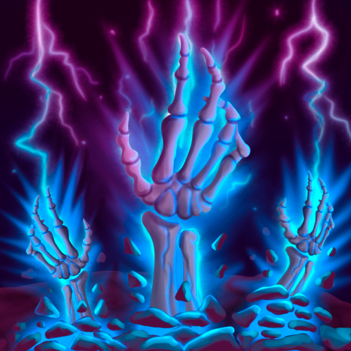

Patch 1.2 – Session 4
Patch 1.2 – Session 4
 Système
Système
 L'aptitude Cécité du Durian létal inflige désormais correctement l'affliction Aveuglé.
L'aptitude Cécité du Durian létal inflige désormais correctement l'affliction Aveuglé.- L'aptitude Souffle des Sentinelles rends 1d6/1d8/1d10/1d12+modificateur de Constitution points de vie en combat (inchangé), et 1d3/1d4/1d5/1d6 points de vie si utilisé en fin de combat.
- La carte du monde a été mise à jour.Modification de certains noms de lieux, en adéquation avec la version française d'Etrian Odyssey 3.Ajout de lieux nommés.
- Les attaques d'opportunité prennent désormais correctement en compte les armes à allonge.
- Divers correctifs de texte.
Classes
 Nécromancien
- L'aptitude Réincarnation du Nécromancien permets maintenant d'utiliser un emplacement de sort de n'importe quel niveau.
- La portée du sort Bombe empoisonnée a été augmentée (3m -> 4.5m)
- Le sort Appât de Spectre joue désormais une animation à l'activation.
 Dragoon
Dragoon
- L'aptitude "Maîtrise du bouclier" a été renommée en "Expertise en défense" (Maîtrise du bouclier existant déjà sur le Lansquenet).
 Shogun
Shogun
- L'aptitude "Boost de moral" a été renommée en "Encouragement revigorant" (Boost de moral existant déjà sur le Souverain).
- L'aptitude "Réincarnation" a été renommée en "Résurgence" (Réincarnation existant déjà sur le Nécromancien).
Kanka
- Ajout de lieux.
- Ajout du Nécromancien.
- Ajout du Dragoon.
- Ajout du Shogun.
- Des musiques ont été ajoutées.